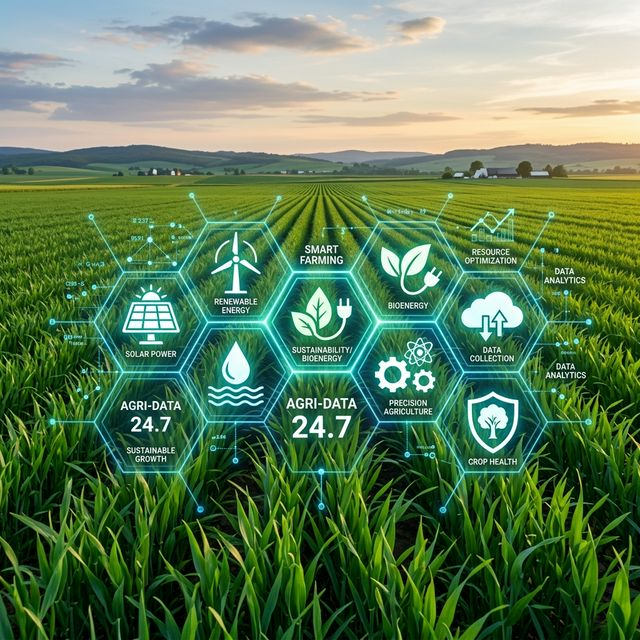
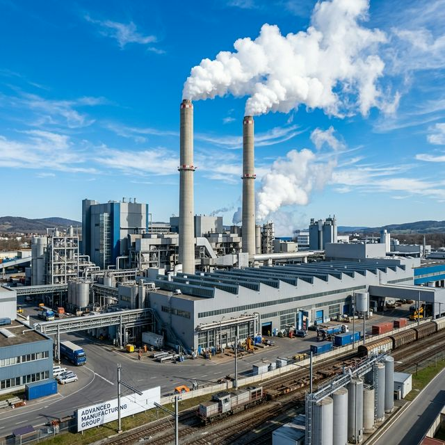
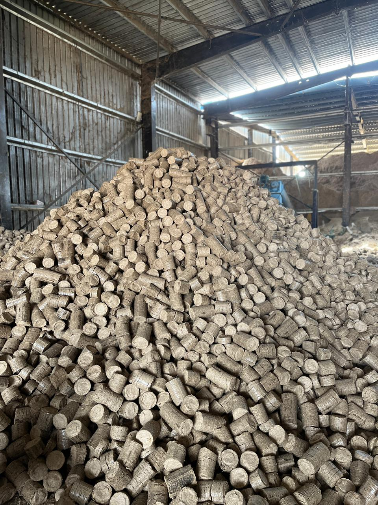
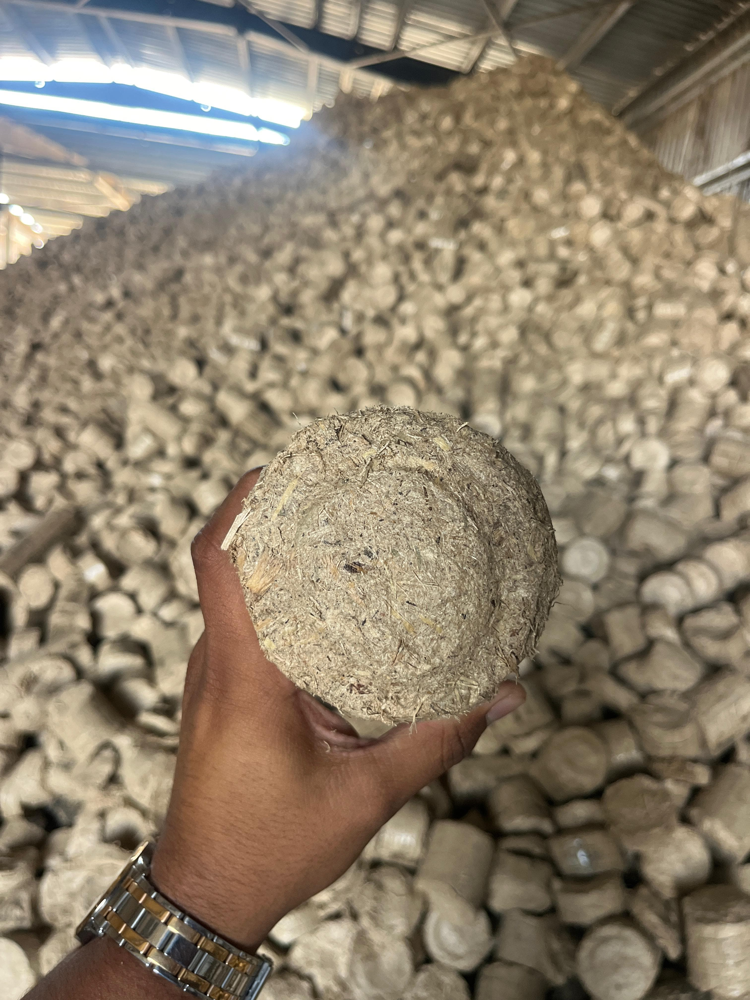
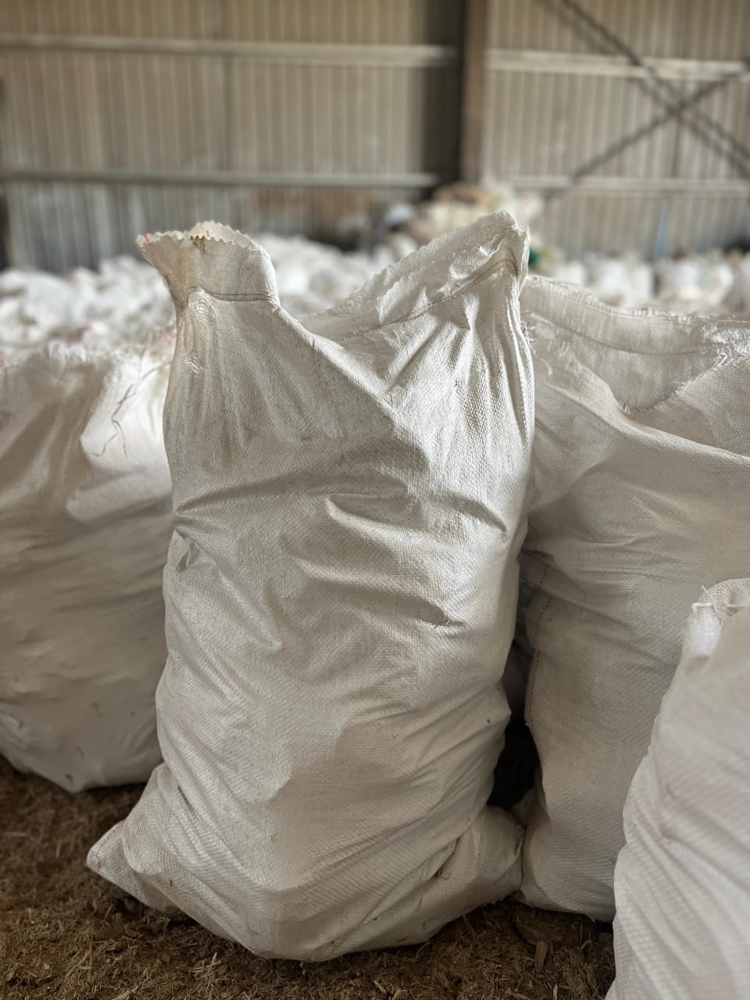

Biofuels
Biomass briquettes, pellets, agro-residue fuels, wood-based biomass and other renewable non-fossil fuels.
Explore vertical ↗Connecting renewable resources, technology, production and markets — through one dependable bioenergy ecosystem.
MATRI BIOVERSE is an integrated platform for bioenergy and bio-resource businesses — from raw material and fuel supply to plant setup, machinery, operations, consulting, training and market linkage.
We bring the complete value chain together, helping industries source renewable fuel, entrepreneurs establish projects, producers improve operations, and suppliers connect with dependable markets.
Discover our approach ↗
We coordinate the people, resources and capabilities that make bio-based businesses work.
From renewable fuels to project execution, our capabilities cover the needs of the complete bio-resource value chain.
Biomass briquettes, pellets, agro-residue fuels, wood-based biomass and other renewable non-fossil fuels.
Explore vertical ↗Organic manure, compost, biochar, soil-enrichment products and useful biomass-processing by-products.
Explore vertical ↗Briquette and pellet plants, shredders, grinders, chippers, dryers, conveyors and handling equipment.
Explore vertical ↗Site assessment, plant layout, equipment coordination, installation, commissioning and handover.
Explore vertical ↗Feasibility, feedstock studies, project economics, technology selection and commercial planning.
Explore vertical ↗Entrepreneur and operator training, quality control, preventive maintenance and SOP development.
Explore vertical ↗Supplier networks, aggregation, storage, transport planning and long-term supply arrangements.
Explore vertical ↗Industrial buyer identification, sample coordination, product positioning and customer development.
Explore vertical ↗
MATRI BIOVERSE is designed to be more than a fuel supplier, machinery vendor or consultant. We bring the right partners together and support customers from opportunity assessment through production and market access.
We coordinate the participants and capabilities that move biological resources towards useful products, energy and markets.



Practical resources.
Responsible progress.
Renewable fuel suitability, sourcing, supply planning, quality specifications and consumption support.
Concept-to-market support: opportunity, feasibility, machinery, installation, training and buyer linkage.
Feedstock sourcing, production improvement, machinery upgrades, cost optimisation and customer development.
Residue monetisation, aggregation, processor linkage, quality guidance and purchase arrangements.
Talk to MATRI BIOVERSE about fuels, projects, machinery, sourcing or market linkage.